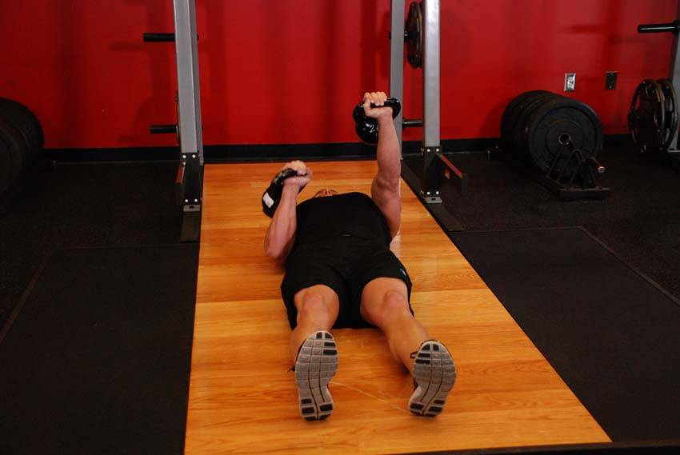

- Lie on the floor with two kettlebells next to your shoulders.
- Position one in place on your chest and then the other, gripping the kettlebells on the handle with the palms facing forward.
- Extend both arms, so that the kettlebells are being held above your chest. Lower one kettlebell, bringing it to your chest and turn the wrist in the direction of the locked out kettlebell.
- Raise the kettlebell and repeat on the opposite side.